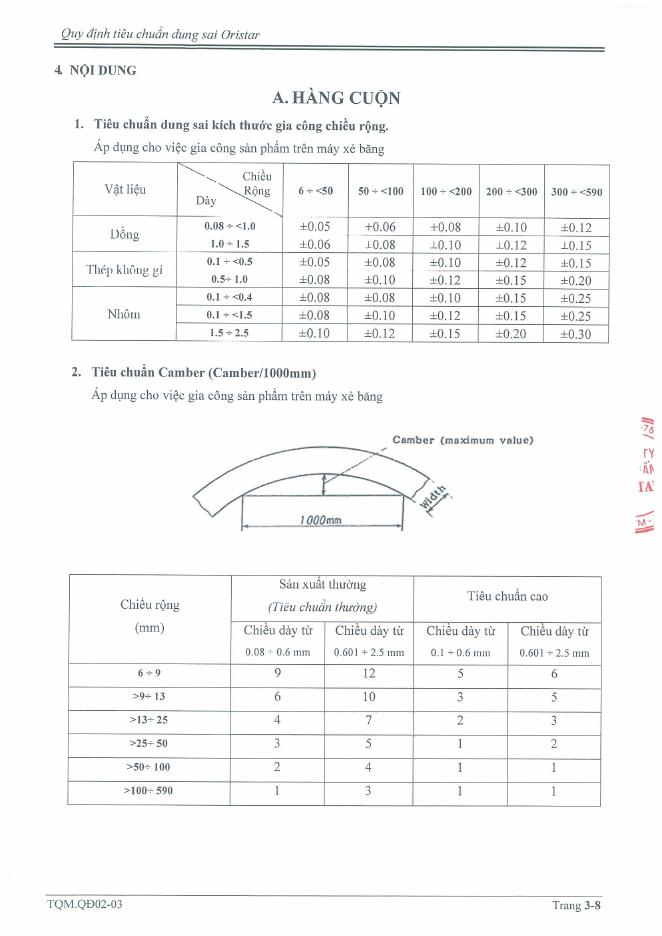
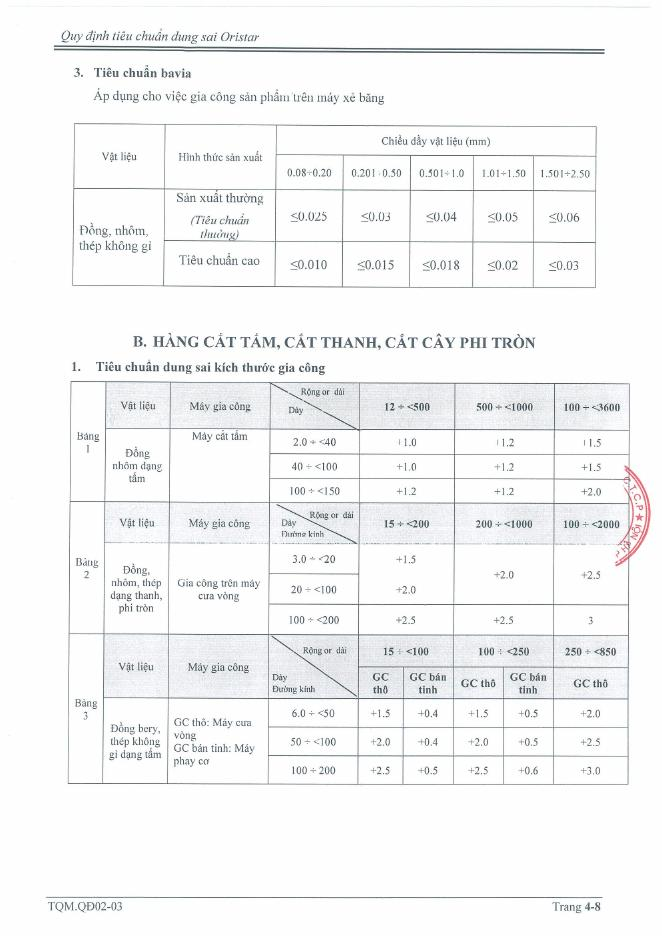
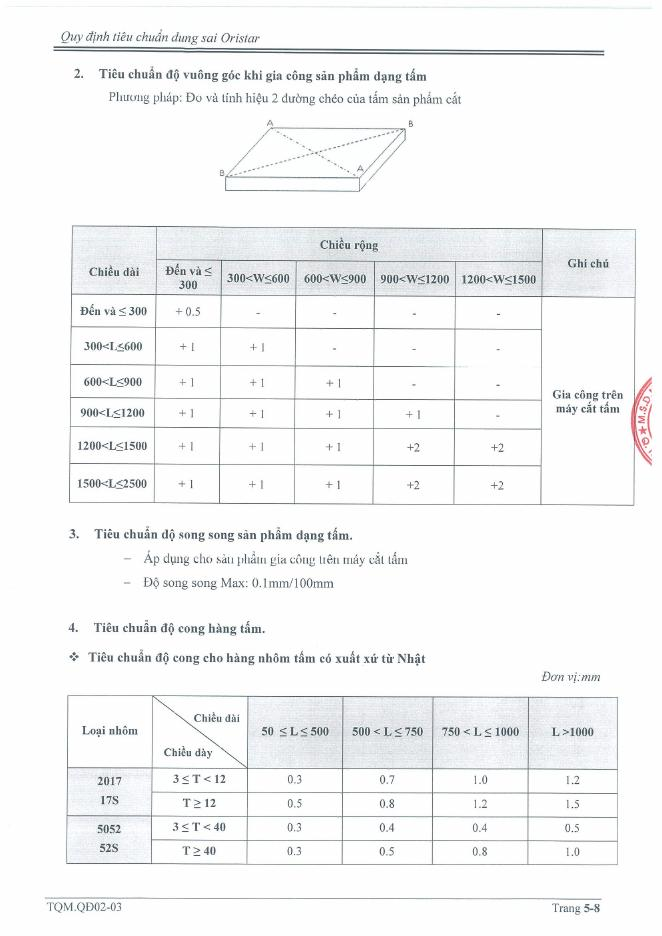
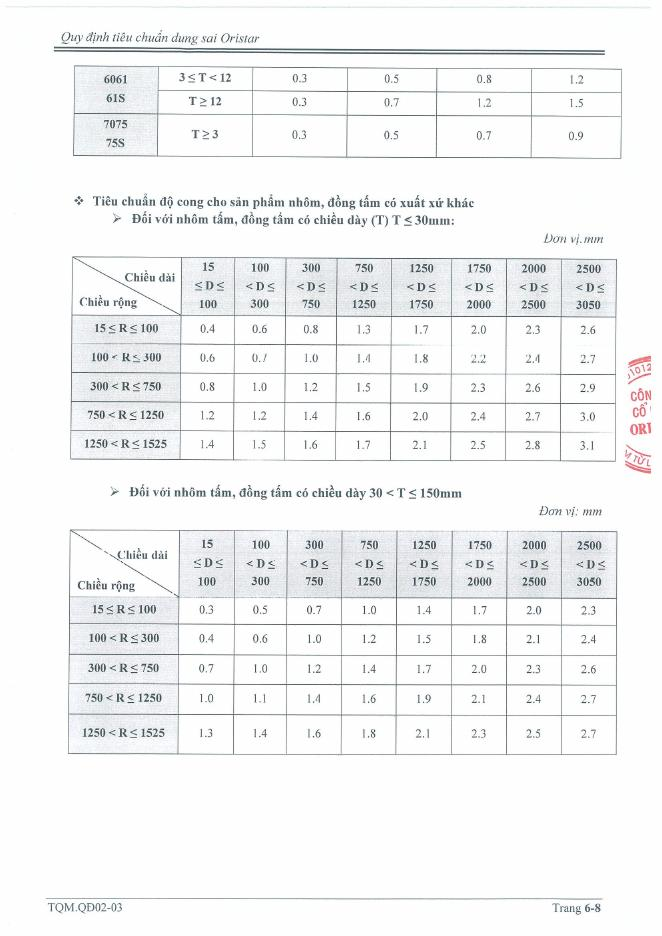
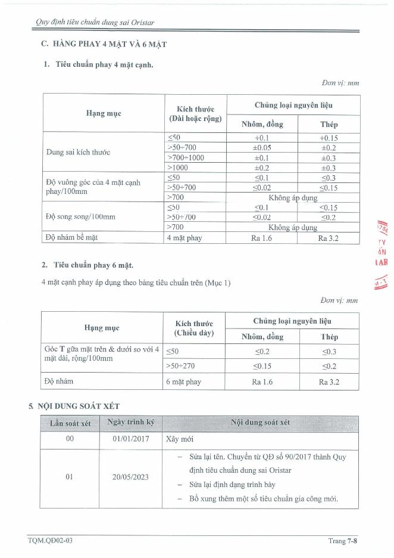

Nhập kích thước, tra ngay tiêu chuẩn theo TQM.QĐ02-03 (lần ban hành 03, 25/10/2024)
Chiều rộng · camber · bavia
Kích thước · vuông góc · song song · độ cong
Độ vuông góc và độ cong lấy cạnh lớn là chiều dài, cạnh nhỏ là chiều rộng.
Kích thước · vuông góc · song song · nhám
Ảnh các trang tiêu chuẩn TQM.QĐ02-03




